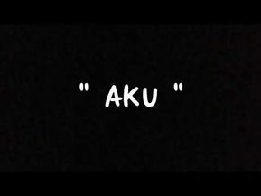
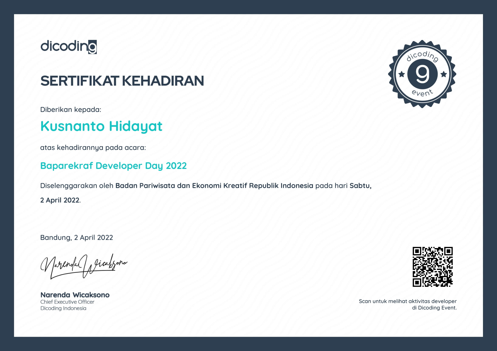
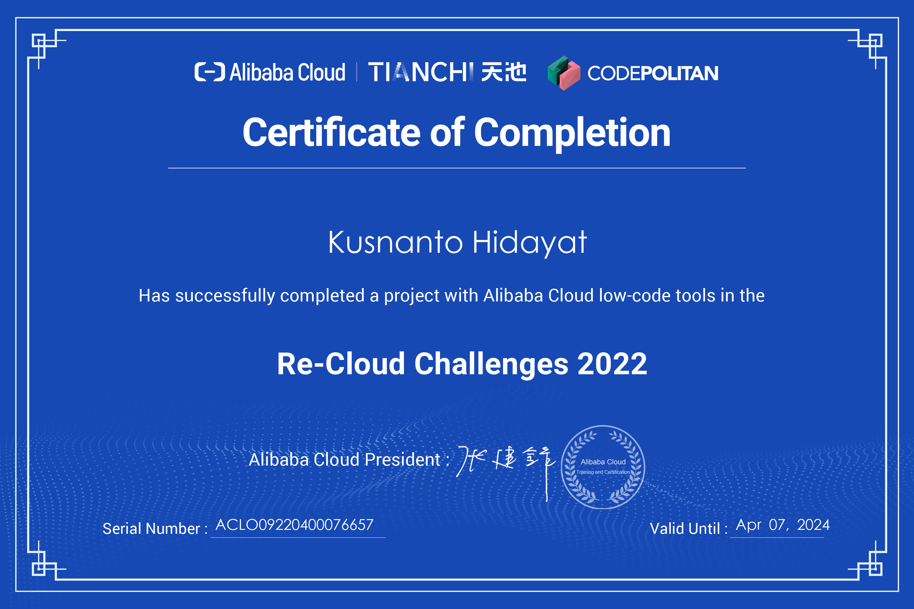

About Me

seseorang yang tertarik dengan dunia Teknologi dan ingin bekerja di bidang teknologi, kebetulan liat youtube-nya Pak Sandhika galih tentang Ivent Barekraf, jadi sekarang saya ada di sini mengerjakan tugas yang sangat seru ini.
Prinsip saya satu yaitu Just Say Yes
Semoga Submission-nya diterima.
My Sertifikat
Ini adalah beberapa sertifikat yang saya ikuti
Sertifikat Barekraf Developer Day 2022

Program Pengembangan Talenta Digital Kreatif Kementerian Pariwisata dan Ekonomi Kreatif/Badan Pariwisata dan Ekonomi Kreatif adalah inisiatif dari Pemerintah untuk mengembangkan dan meningkatkan kapasitas pelaku ekonomi
kreatif, khususnya pengembang aplikasi. Terutama pada masa pandemi ini, Kemenparekraf/Baparekraf ingin hadir secara langsung untuk memberikan angin segar untuk pengembangan talenta, sebagai upaya untuk mengaktifkan kembali
ekonomi, khususnya pada bidang kreatif dan digital
Sertifikat Recloud Challenge

Ini adalah salah satu program yang saya ikuti karna iseng coba-coba, Program Re-Cloud Challenge 2022 adalah bagian dari event Asia Forward Competition Season 2. Kompetisi ini menawarkan tantangan menarik kepada semua kalangan
untuk membuat dan mempublikasikan website tanpa perlu menuliskan kode program atau dikenal dengan istilah Low-Code Competition. Event ini bertajuk "Website untuk semua orang" dengan target membukakan kesempatan seluas-luasnya
bagi siapapun untuk dapat membuat website sendiri dengan sangat mudah menggunakan platform website builder ALICMS dari Alibaba Cloud.